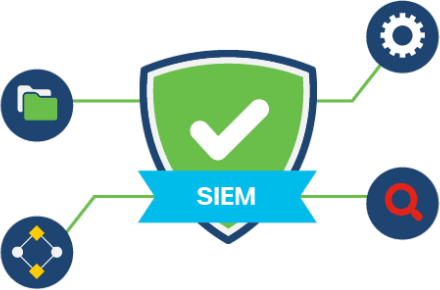
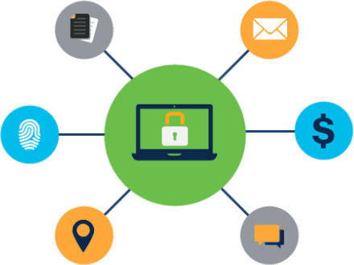

Explain the basics of being safe online, including what cybersecurity is and its potential impact.
Explain the most common cyber threats, attacks and vulnerabilities.
Explain how organizations can protect their operations against these attacks.
Access various information and resources to explore the different career options in cybersecurity.
Module 4 - Protecting the Organization
Welcome to this module, which will outline the various strategies and tools used by cybersecurity
professionals to protect an organization’s network, data and equipment from cybercrime.
You only have to look at the news to understand that all organizations, regardless of type, size or
location, are at risk of a cyber attack. It seems that no one is safe.
So is there anything you can do to help protect an organization from a targeted attack? And with many in
the security industry predicting that it’s not a case of ‘if’ but ‘when’ a cybersecurity breach will
occur, how can you respond to ensure that it has minimal impact?
This module will highlight the actions that you can take to help answer these questions.
Chapter 4.3 - Cisco's Approach to Cybersecurity
Cybersecurity is becoming a significant business concern. Organizations should therefore have plans in
place to prepare for, deal with, and recover from a security breach.
Here at @Apollo, we use Cisco technology. Let’s check these out.
4.3.1 Cisco's CSIRT
Many large organizations have a Computer Security Incident Response Team (CSIRT) to receive, review
and respond to computer security incident reports. Cisco CSIRT goes a step further and provides
proactive threat assessment, mitigation planning, incident trend analysis and security architecture
review in an effort to prevent security incidents from happening.
Cisco’s CSIRT takes a proactive approach, collaborating with the Forum of Incident Response and
Security Teams (FIRST), the National Safety Information Exchange (NSIE), the Defense Security
Information Exchange (DSIE) and the DNS Operations Analysis and Research Center (DNS-OARC) to ensure
we stay up-to-date with new developments.
There are several national and public CSIRT organizations, like the CERT Division of the Software
Engineering Institute at Carnegie Mellon University, that are available to help organizations and
national CSIRTs to develop, operate and improve their incident management capabilities.
4.3.2 Security Playbook
One of the best ways to prepare for a security breach is to prevent it. Organizations should provide
guidance on:
how to identify the cybersecurity risk to systems, assets, data and capabilities
the implementation of safeguards and personnel training
a flexible response plan that minimizes the impact and damage in the event of a security breach
security measures and processes that need to be put in place in the aftermath of a security
breach.
All this information should be compiled into a security playbook.
A security playbook is a collection of repeatable queries or reports that outline a
standardized process for incident detection and response. Ideally, a security playbook
should:
highlight how to identify and automate the response to common threats such as the
detection of malware-infected machines, suspicious network activity or irregular
authentication attempts
describe and clearly define inbound and outbound traffic
provide summary information including trends, statistics and counts
provide usable and quick access to key statistics and metrics
correlate events across all relevant data sources.
4.3.3 Tools for Incident Detection and Prevention
There are a range of tools used to detect and prevent security incidents.
SIEM

A Security Information and Event Management (SIEM) system collects and analyzes security
alerts, logs and other real-time and historical data from security devices on the network to
facilitate early detection of cyber attacks.
DLP

A Data Loss Prevention (DLP) system is designed to stop sensitive data from being stolen
from or escaping a network. It monitors and protects data in three different states: data in
use (data being accessed by a user), data in motion (data traveling through the network) and
data at rest (data stored in a computer network or device).